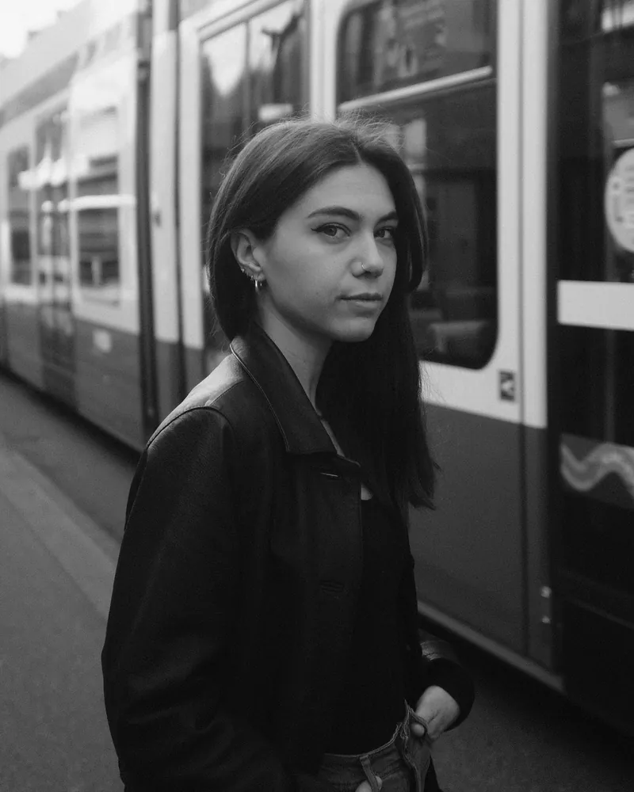

Projetos recentes
Portfólio

Elisa Ceccarelli
Meu nome é Elisa Ceccarelli, nasci em Roma e sou apaixonada por desenho desde criança. Estudei em uma escola de ensino médio voltada para a arte e me formei em Escultura pela Academia de Belas Artes.
Há cerca de seis anos, iniciei minha jornada como tatuadora, trabalhando em estúdios, participações especiais e convenções que ajudaram a moldar e enriquecer meu estilo. Atualmente, resido em Zurique, onde continuo atuando como tatuadora. Sou especializada em linhas finas e microrrealismo, estilos que refletem minha precisão e sensibilidade artística.
Com uma sólida formação em desenho, crio cada tatuagem do zero, em estreita colaboração com meus clientes, sempre buscando um resultado único e personalizado.
@elisa.tattoo__Onde estamos
Birmensdorferstrasse 1148003 Zurique, Suíça
Atendimento mediante agendamento de consulta.
Durante a consulta, podemos conversar sobre sua ideia, esclarecer dúvidas e desenvolver um projeto de tatuagem totalmente personalizado.